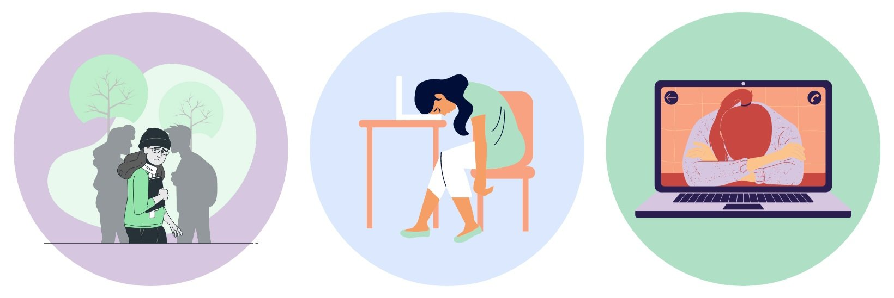
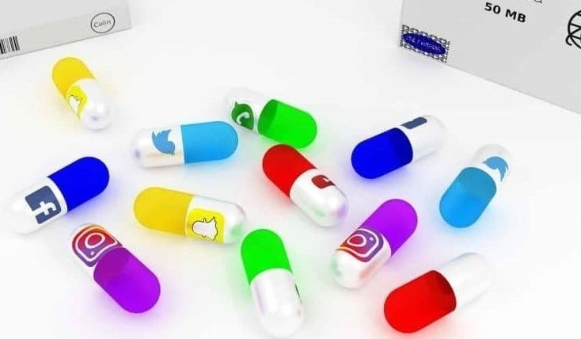
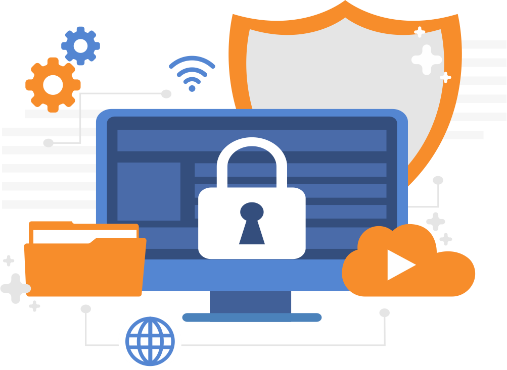

Disadvantages of Social Media
Mental and Social Impact:
Social media can greatly affect people’s mental health. It can
increase anxiety and depression due to social comparisons and feelings
of isolation. People often see idealized versions of others’ lives,
which can make them feel unhappy with their own. Additionally,
excessive use of social media can harm real-life relationships because
people might prioritize virtual interactions over face-to-face
communication, leading to a sense of loneliness and disconnection from
the real world.

Addiction and Distraction:
Social media is very addictive, and people often spend hours on it
without a clear purpose. This addiction can lead to distraction and
lower productivity at work or school. The constant notifications and
the urge to check updates can interrupt important tasks, making it
hard to focus. Over time, this can result in poor time management and
a decrease in the quality of work or study, as individuals struggle to
balance their online and offline lives.

Spread of Misinformation:
Social media helps spread fake news and misleading information
quickly. This can lead to people forming incorrect opinions and making
decisions based on inaccurate information, which affects society as a
whole. Misinformation can cause panic and harm public health, as seen
with the spread of false information about vaccines. The rapid
dissemination of such content makes it challenging to correct false
narratives, leading to long-term misconceptions and distrust in
reliable sources.

Privacy and Security:
Privacy is a major challenge for social media users. Personal
information can be hacked or misused, exposing individuals to risks
like cyber theft and blackmail. Many users are unaware of how much
data they share online, which can be exploited by malicious actors.
Additionally, social media platforms often collect and sell user data
to third parties, raising concerns about consent and the potential
misuse of personal information. This lack of privacy can lead to
serious consequences, including identity theft and financial loss.
